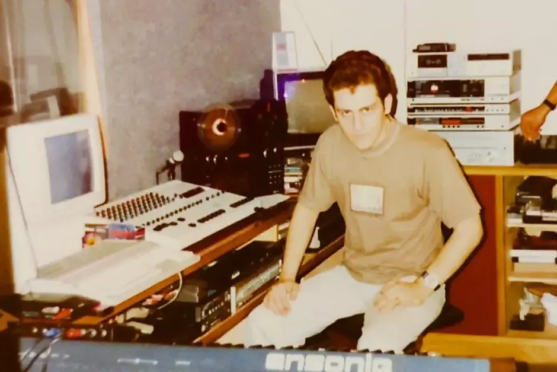

O sexto elemento
Rick Bonadio “Creuzebek”
Bonadio acompanhou a Utopia, enxergou o potencial da virada cômica e produziu o álbum de 1995 — uma espécie de tradutor entre a energia caótica dos cinco e um disco que precisava funcionar no rádio.
O apelido “Creuzebek”, criado pelos músicos, entrou na mitologia da banda e aparece até hoje quando Bonadio recorda aquele período.